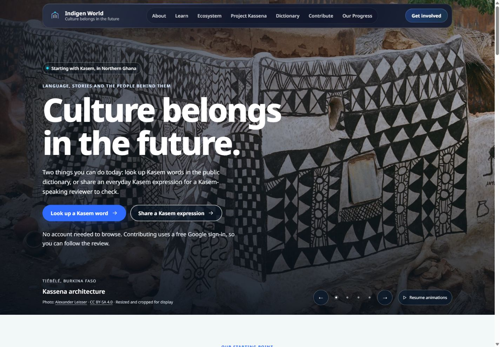
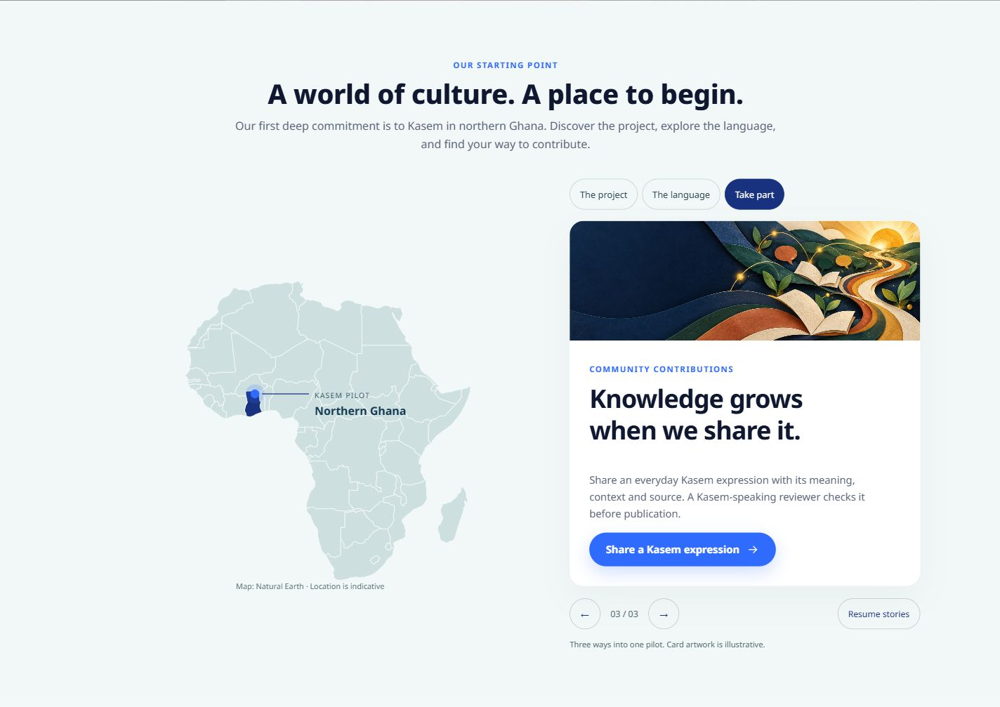
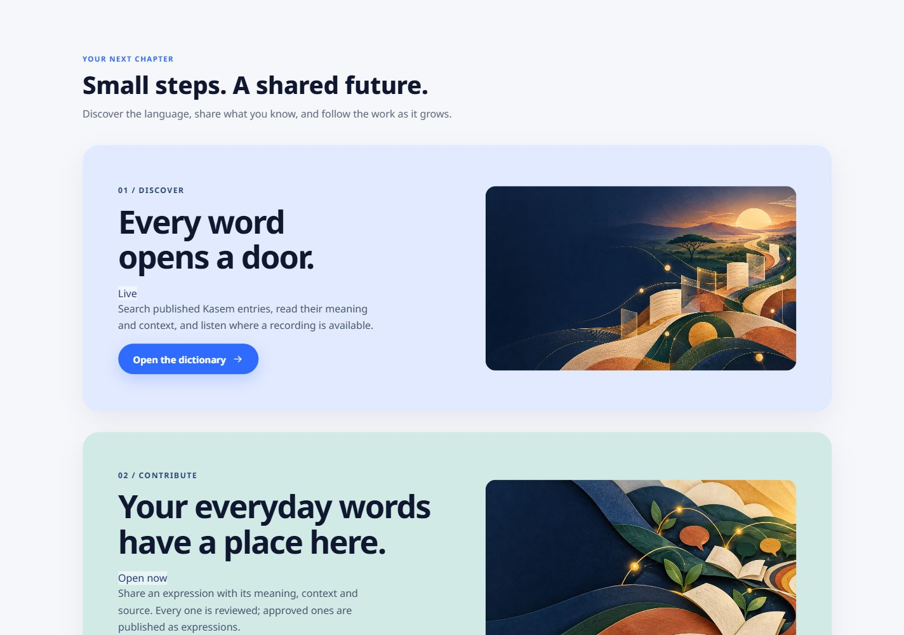

Language lives in people, places and everyday practice. A new Indigen World homepage design brings those connections into view, with cultural photographs, a map of our starting point and a guided journey through ways to take part.
Availability: This update is implemented and checked in a local preview. It has not yet been deployed to the public website.
The opening banner fills the width of the page with four credited photographs: Kassena architecture in Tiébélé, Burkina Faso; basket weavers in Bolgatanga, Ghana; kente weaving in Ghana; and baskets made in northern Ghana. Gentle movement and transitions bring the photographs into view while the main headline and links remain steady.

Use the arrows or dots to choose a photograph. Choosing one pauses the automatic sequence so you can look at it at your own pace. The pause control is shared with the site's other animations.
An Africa map highlights Ghana, where our Kasem pilot begins. Beside it, three changing cards introduce Project Kassena, the public dictionary and everyday expression contributions. Choose a tab or use the arrows to explore each route.

Three large cards guide visitors through looking up words, sharing expressions and following community progress. On larger screens the cards rise into view and layer as you scroll. On phones and short screens, they stay in a normal vertical layout so every link remains easy to reach.

The banner and map stop advancing when they are out of view, when the tab is hidden, or while you interact with their controls. Reduced-motion preferences switch off automatic playback and animated transitions. The dictionary remains open to browse without an account; contributions still use the existing sign-in and review process.
The photographs document their credited subjects. They are not presented as Indigen World events or as endorsements by the people pictured. The redesign takes inspiration from the Endangered Languages Project's visual approach while using Indigen World's own layout and content.